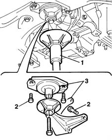
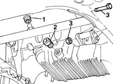
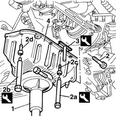
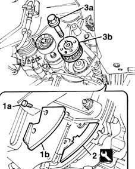
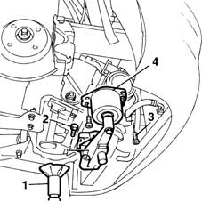
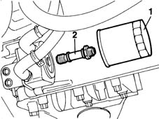
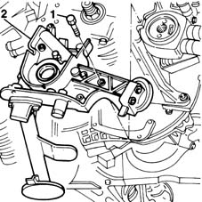

1020D16 front crankshaft oil seal cover - r+r and replace gaskets for versions with airconditioner
- Path
- Procedures > 10 ENGINE UNIT > 1020 CRANKCASE SUMP AND COVERS > 1020D oil seals on crank shaft > 1020D16 front crankshaft oil seal cover - r+r and replace gaskets for versions with airconditioner
- Kind
- repair procedure (removal / refitting; the operation number is the code)
- Applies to
- engines: 1.9 JTD 8V; all production periods
- Interactive page
- https://sloeber94.github.io/elrnDB-fMltpl/en/#/2891359
Applies to: engines: 1.9 JTD 8V; all production periods
 Removing
Removing
 Refitting
Refitting4450B10 Front WHEEL (one) - R.R.
- 7055B64 Engine compartment DUST shield in front wheel arch (one), left or right - R.R.
1092G10 single engine belt r r
1092A12 crankshaft pulley - r+r for versions with air conditioner
1032D12 timing system protective cover(s) - r + r
1016A10 sound-proofing cover - r + r
1008C10 power unit upper reaction link r r
1008C14 engine link bracket - r r
1084A16 oil dip stick pipe - r r
4130B32 power steering pump mount - r r
1076B50 exhaust pipe attachment to engine - r + r
1. Position a hydraulic jack beneath the engine mount.
2. Unscrew the retaining bolts.
3. Remove the rear engine mount together with the flexible block.

Applies to: engines: 1.9 JTD 8V; all production periods
1. Disconnect the condensed oil return pipe from the oil vapour separator from the crankcase sump.
2. Unscrew the drain plug and drain the oil off into a suitable container.
Close the oil plug.
3. Undo the bolt connecting the oil sump to the intermediate shaft support.

Applies to: engines: 1.9 JTD 8V; all production periods
Place a column jack beneath the engine oil sump.
1. Unscrew the bolts securing the oil sump to the gearbox - differential unit.
2. Use tools (2a) and (2b) to unscrew front and rear bolts (2c) and side bolts (2d) securing the sump to the crankcase.
 | Name | Country |
|---|---|---|
2a | Key | 1.860.833.000 |
| Name | Country |
|---|---|---|
2b | Key | 1.860.834.000 |
3. Use a knife to cut the sealant around the edge of the oil sump.
| Name | Country |
|---|---|---|
3 | Blade | 1.870.817.000 |
Lower the hydraulic jack while supporting the oil sump.
4. Remove the engine oil sump.

Applies to: engines: 1.9 JTD 8V; all production periods
Refit the rear engine mount and block temporarily.
1. Undo bolts (1a) and remove flywheel guard (1b).
2. Fit the engine flywheel retaining tool.
| Name | Country |
|---|---|---|
2 | Counter-torque | 1.860.898.000 |
3. Undo retaining bolt (3a) and remove toothed drive pulley (3b).

Applies to: engines: 1.9 JTD 8V; all production periods
Place a soft shim between the drive shaft flange and wishbone.
1. Place a hydraulic jack beneath the gearbox.
2. Undo the bolts securing the support to the front cover.
3. Unscrew the bolts retaining the block to the body.
4. Remove the engine mount complete with block.

Applies to: engines: 1.9 JTD 8V; all production periods
1. Remove the cartridge oil filter from the heat exchanger.
2. Remove the pin securing the heat exchanger to the oil pump front cover.

Applies to: engines: 1.9 JTD 8V; all production periods
1. Unscrew the retaining bolts.
2. Remove the engine oil front sealing cover together with the oil intake housing.
Recover the underlying gasket.

Applies to: engines: 1.9 JTD 8V; all production periods
Refitting
RemovingFit a new gasket.
Fit the front oil seal cover together with the engine oil intake housing.
Tighten the retaining bolts to torque.
 | Fastening | Component | Ø | Value (daNm) |
|---|---|---|---|---|
- | Bolt | CRANKSHAFT FRONT COVER | M6 | 0.8 - 1.0 |
Fit the heat exchanger to the front oil pump cover and tighten the retaining pin to torque.
Hand-tighten the oil filter cartridge.
Fit the engine mount and block.
Tighten the bolts securing the mount to the front cover to torque.
| Fastening | Component | Ø | Value (daNm) |
|---|---|---|---|---|
- | Bolt | ENGINE MOUNT TIMING SIDE | M10 | 7 |
Tighten the bolts securing the block to the body to torque.
| Fastening | Component | Ø | Value (daNm) |
|---|---|---|---|---|
- | Bolt | FRONT RUBBER MOUNTS | M8 | 3.5 |
Remove the shim between the drive shaft flange and the wishbone.
Remove the hydraulic jack from beneath the gearbox.
Fit the toothed drive pulley.
Tighten the pulley bolt to torque.
| Fastening | Component | Ø | Value (daNm) |
|---|---|---|---|---|
- | Left bolt | FLYWHEEL SIDE COVER | M16 | 306 - 378 |
Remove the flywheel retainer and fit the engine flywheel guard.
Clean the oil sump and crankcase surfaces thoroughly to remove all traces of sealant.
Apply silicone sealant around the perimeter of the engine oil sump.
Fit the engine oil sump.
Use a hydraulic jack to hold the oil sump in contact with the crankcase.
Use the tools originally used for dismantling to tighten the bolts securing the engine oil sump to the crankcase to torque.
| Name | Country |
|---|---|---|
- | Key | 1.860.833.000 |
| Name | Country |
|---|---|---|
- | Key | 1.860.834.000 |
| Fastening | Component | Ø | Value (daNm) |
|---|---|---|---|---|
- | Bolt | OIL SUMP | M6 | 0.9 |
| Fastening | Component | Ø | Value (daNm) |
|---|---|---|---|---|
- | Bolt | OIL SUMP | M8 | 2.5 |
Remove the hydraulic jack.
Connect the condensation oil return pipe from the oil vapour separator to the crankcase sump.
Fit the rear engine mount with its flexible block and tighten the retaining bolts to torque.
| Fastening | Component | Ø | Value (daNm) |
|---|---|---|---|---|
- | Bolt | INTERM RUBBER MOUNT | M8 | 3.5 |
1076B50 exhaust pipe attachment to engine - r + r
4130B32 power steering pump mount - r r
1084A16 oil dip stick pipe - r r
1008C14 engine link bracket - r r
1008C10 power unit upper reaction link r r
1016A10 sound-proofing cover - r + r
1032D12 timing system protective cover(s) - r + r
1092A12 crankshaft pulley - r+r for versions with air conditioner
1092G10 single engine belt r r
- 7055B64 Engine compartment DUST shield in front wheel arch (one), left or right - R.R.
Topics linked from this page (11)
- 1008C10 power unit upper reaction link r r
- 1008C14 engine link bracket - r r
- 1016A10 sound-proofing cover - r + r
- 1032B14 toothed timing belt - r + r for timing adjustment or replacement versions with air conditioner
- 1032D12 timing system protective cover(s) - r + r
- 1076B50 exhaust pipe attachment to engine - r + r
- 1084A16 oil dip stick pipe - r r
- 1092A12 crankshaft pulley - r+r for versions with air conditioner
- 1092G10 single engine belt r r
- 4130B32 power steering pump mount - r r
- 4450B10 Front WHEEL (one) - R.R.